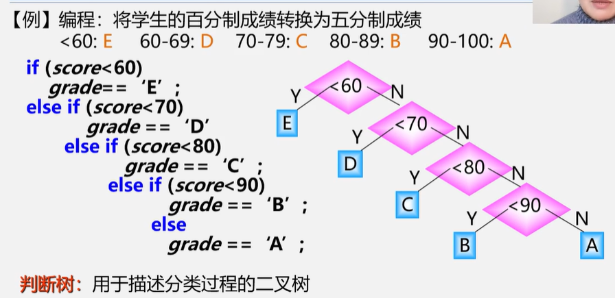
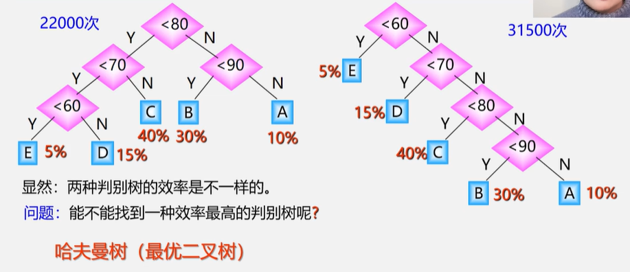
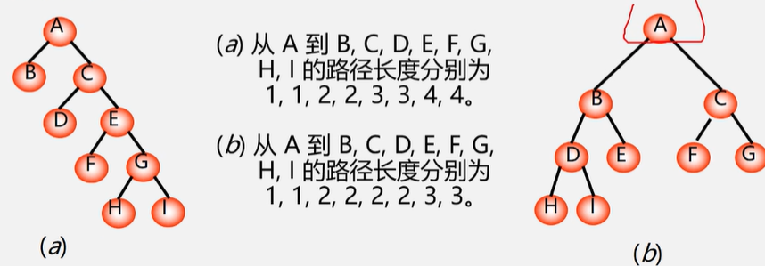
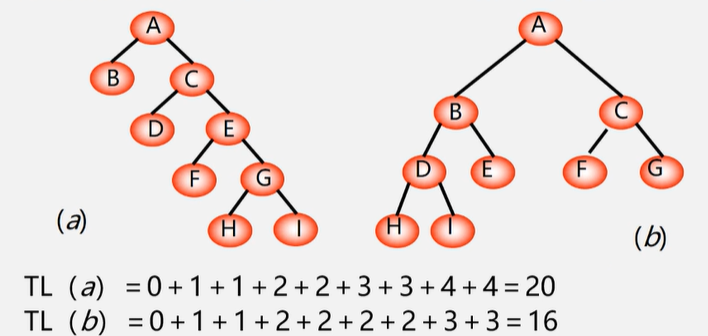
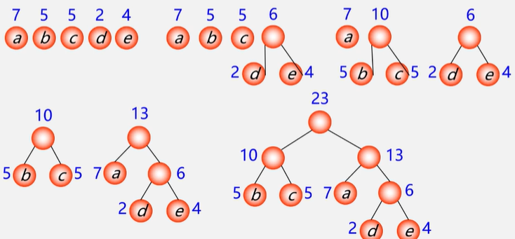

哈夫曼树及应用


哈夫曼树的基本概念
- 路径：从树中一个结点到另一个结点之间的分支构成这两个结点间的路径
- 结点的路径长度：两结点间路径上的分支数

- 树的路径长度：从树根到每一个结点的路径长度之和[记作TL]

结点数目相同的二叉树中，完全二叉树是路径长度最短的二叉树[但不只有完全二叉树]
- 权：将树中结点赋给一个有含义的数值，该数值称为结点的权
- 结点的带权路径长度（WPL）：从根结点到该结点之间的路径长度与该结点的权的乘积
- 树的带权路径长度：树中所有叶子结点的带权路径长度之和
哈夫曼树：带权路径长度最短的树[度相同]
- 满二叉树不一定是哈夫曼树
- 哈夫曼树中 权越大的叶子 离根越近
- 具有相同带权结点的哈夫曼树 不唯一
哈夫曼树的构造算法
哈夫曼算法
- 构造森林全是根
- 选用两小造新树
- 删除两小添新人
- 重复2、3剩单根
- 结点度数为0/2
- n个叶子结点的哈夫曼树中共有2n-1个结点[n-1次合并，多n-1个结点]

哈夫曼树构造算法实现
顺序存储结构——一维结构数组
typedef struct{
int weight;
int parent,lch,rch;
}HTNode,*HuffmanTree;